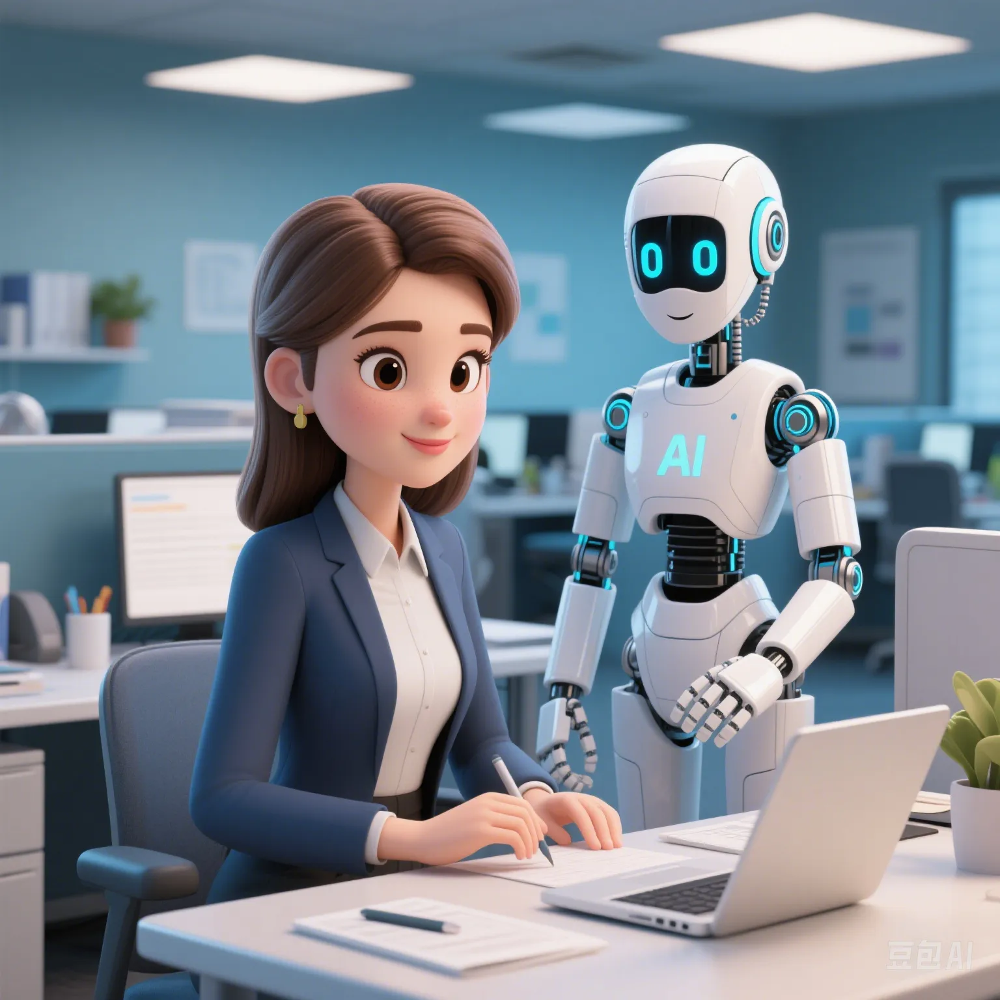

2025 Global Workplace Skill Gap Big Data: Can AI Do What You Can?
PeaceLove.Top Insights :2025-04-17
💡 The game between workplace skills and AI. With the continuous development of artificial intelligence (AI) and automation technology, the global workplace is undergoing earth - shattering changes. More and more jobs are being replaced by AI and robots, but at the same time, new jobs and skill requirements are constantly emerging. Are you starting to worry about the'skill gap' problem you may face? According to reports from major global labor markets, the global workplace will face an unprecedented skill gap problem in 2025. The wide application of AI and the acceleration of enterprise automation are changing the content and mode of work. So, which skills will become the 'core competitiveness' in the future workplace? Which jobs will be replaced by AI, and which skills are irreplaceable by AI?
📊 Analysis of global workplace skill gap data
According to the prediction of the World Economic Forum, by 2025, about 85 million jobs globally may be replaced by AI and automation, and at the same time, new jobs will emerge, and it is estimated that about 97 million new positions need to be filled. Specifically, here is the situation of skill gaps faced by different regions around the world.
| Region | Estimated skill gap (in millions of jobs) | Main skill requirements | Affected industries |
|---|---|---|---|
| North America | 2.5 | Programming and software development, data analysis, AI application | Information technology, finance, manufacturing |
| Europe | 1.9 | Data analysis, network security, digital marketing | Manufacturing, finance, retail |
| Asia | 3.2 | Cloud computing, artificial intelligence, digital management | Information technology, education, e - commerce |
| Africa | 1.1 | E - commerce, digital skills, agricultural technology | Manufacturing, agriculture, communication |
| Latin America | 0.9 | Programming, artificial intelligence, big - data processing | Manufacturing, finance, transportation |
North America and Europe: Most affected by AI and automation, especially the demand for IT and data - processing related skills has soared. Asia: Due to the rapid digital transformation, especially in the fields of e - commerce and cloud computing, the skill demand has increased. Africa and Latin America: There are large digital skill gaps in the fields of agriculture, communication, and manufacturing in these regions, especially prominent among the young population.
🤖 Which skills will disappear as AI replaces jobs?
With the continuous development of AI, automation and machine learning are rapidly replacing traditional low - skill jobs, especially in manufacturing, basic data processing, and some repetitive jobs. Here are some occupations and skills that may be replaced by AI:
| Occupation type | Reason for being replaced by AI | Affected skills |
|---|---|---|
| Data entry clerk | AI can automate most data - entry tasks | Data entry, word processing |
| Customer service representative | Chatbots and voice - recognition technology can replace | Customer service, problem - solving |
| Manufacturing worker | Automated production lines are gradually replacing manual operations | Mechanical operation, assembly and inspection |
| Accountant and auditor | AI can quickly complete financial data analysis and reporting | Accounting, report preparation |
| Courier | The wide application of drones and automated logistics systems | Courier delivery, route optimization |
Data entry clerks and couriers: These jobs are easily affected by AI because they involve a large number of standardized tasks that AI can complete efficiently. Customer service representatives and accountants: Although these jobs require a certain amount of judgment and communication skills, AI technology has begun to show its potential in these fields, especially when dealing with common problems and simple financial accounting.
🔮 Which skills are irreplaceable by AI?
Although AI has made significant progress in many fields, there are still some jobs and skills that are difficult for AI to replace. Here are some key skills and jobs that AI cannot replace:
| Skill type | Description | Affected jobs |
|---|---|---|
| Creativity and artistic ability | AI can generate content, but it cannot show real creativity and emotional expression | Artists, designers, writers |
| Interpersonal communication ability | AI cannot understand complex social dynamics and human emotions | Consultants, HR personnel, leaders |
| Advanced decision - making and strategic planning | High - level decision - making needs to consider various complex factors | Executives, strategic analysts |
| Ethical and legal judgment | Human beings have the ability to judge ethics, law, and social responsibility | Lawyers, ethicists, policy - makers |
| Advanced technological innovation | AI cannot carry out completely innovative thinking and requires human insight and experimental spirit | Scientists, engineers, R & D personnel |
Creativity and artistic ability: Although AI can generate art or music, these works lack deep - seated emotions and unique human artistic expressions. Interpersonal communication and advanced decision - making: AI can provide data support, but it cannot replace complex interpersonal interactions and strategic decisions, especially in leadership and ethical judgment.
📈 Future workplace skill trends
The future workplace will require people to have more comprehensive skills, especially the ability to combine digitalization with human emotions. Here are the trends of future workplace skills:
| Skill type | Description | Future demand fields |
|---|---|---|
| Cross - field integration ability | Integrate multi - disciplinary knowledge to solve complex problems | Enterprise management, scientific research, innovation |
| Data analysis and AI application | Use data analysis and AI to optimize work processes and support decision - making | Finance, healthcare, education, manufacturing |
| Soft skills and emotional intelligence | Emotional understanding, teamwork, and communication ability | Senior management, customer relationship management, HR |
| Self - learning and adaptability | Continuously update knowledge and skills to adapt to the changing work environment | Entrepreneurship, freelancing, multinational companies |
Cross - field integration ability: The future workplace will pay more attention to cross - disciplinary cooperation and integration, and talents with this ability will be favored. Soft skills and emotional intelligence: Although AI is very powerful, it cannot replace the emotional connection between people. Therefore, good communication and teamwork skills will continue to be high - value skills.
🧠 Conclusion: Adapt to future workplace changes and improve your own skills
With the continuous progress of AI technology, the skill requirements in the future workplace are changing. In order to gain a foothold in this challenging environment, we should not only embrace technological progress but also continuously improve our comprehensive qualities, maintain a lifelong learning attitude, and adapt to the rapidly changing workplace needs. In the future, innovation ability, cross - field integration ability, and emotional intelligence will become the keys to workplace competitiveness. I hope everyone can maintain their unique value in the wave of digital transformation and gain the initiative in the future workplace!